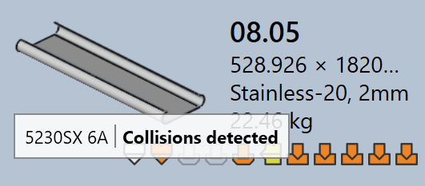
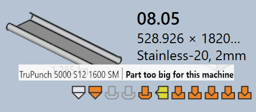

Tooling status
TruSmartCAMでは、各パーツタイルは、すべての利用可能な機械に対するそのパーツのツーリング状態を視覚的に示します。これにより、ユーザーはパーツがどの機械でツーリングされているか、ツーリングが準備完了か、レビューが必要か、または不足しているかをすばやく確認できます。
-
ツーリング状態は、アイコンと色インジケーターを使用してパーツタイル上に直接表示されます。
-
各アイコンは機械技術を表します（例：パンチング、レーザー）。
-
アイコンの色は、その機械の現在のツーリング状態を示します。
以下の表は、各アイコンと色の意味を説明し、ユーザーがツーリング状態を正確に解釈できるようにします。

| 機械アイコン | 説明 |
|---|---|
|
レーザーカット機 |
|
パンチング機 |
|
プレスブレーキ |
|
パネルベンダー |
| ツーリング状態 | 説明 |
|---|---|
|
ツーリングは正常です |
|
ツーリングに警告があります |
|
ツーリングにエラーがあります |
|
ツーリングが利用できません |
ツーリングエラー
CAM（コンピューター支援製造）エラーは、ツーリングまたは製造準備段階で発生します。これらのエラーは、工具の衝突、ツーリングの不足、または無効な切削条件などの問題により発生します。
曲げツーリングエラー
-
衝突検出*および*グリッパーエラー：曲げセットアップがシミュレーション中に工具またはグリッパーの衝突を引き起こします。

-
過負荷エラー*および*フランジの幅が狭いか、穴が近すぎます：曲げ工具が過負荷であるか、穴が曲げラインに近すぎる位置にあり、パーツまたは工具を損傷する可能性があります。


-
見直しが必要です*および*パンチ/ダイの長さが短い：ツーリングセットアップには手動検査が必要であるか、選択されたダイ/パンチスパンがパーツに必要なものより小さいです。


-
失敗です、バックゲージの不良、または*この機械にはパーツが大きすぎる*：必要な曲げ工具が利用できない、バックゲージが適切に設定されていない、または選択した機械に対してパーツが大きすぎます。


カットツーリングエラー
-
切断条件がありません：原材料に切削条件がマッピングされていないため、切削を実行できません。

-
コンターのツーリングが全くまたは部分的にしか行われていません：ツーリングプロセス中に一部の形状またはエッジが漏れているか、部分的にしかカバーされておらず、切削用のパーツが不完全になります。